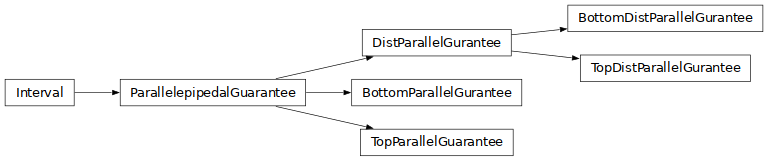
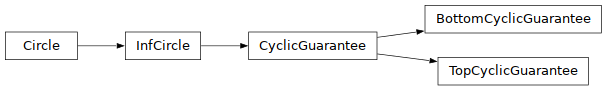

Guarantees¶
Families of interval certifications.
Parallepipedal Guarantees¶

- class guarantees.parallelepipedal.ParallelepipedalGuarantee(x_star: ndarray, c_star: int, delta: float, domain: Interval)¶
Description:
A class encoding a stability guarantee. Essentially a stability guarantee is an interval of the form
[lb, ub], where lb, ub are vectors of thedomaininput space.Guarantee Refinement Operations:
constrain(x^c): Excludes the counterexample x^c from the guarantee.expand(): Expands the guarantee (every coordinate of lb, ub) by delta.expand_ub(i, j): Expand by delta only the (i,j)-th coordinate of ub.expand_lb(i, j): Expand by delta only the (i,j)-th coordinate of lb.revert_expand_ub(i, j): Reduces by delta the (i, j)-th coordinate of ub.revert_expand_lb(i, j): Reduces by delta the (i, j)-th coordinate of lb.
- __init__(x_star: ndarray, c_star: int, delta: float, domain: Interval) None¶
The default constructor.
- __copy__()¶
Copy constructor.
- set_bounds(new_lb: ndarray | None, new_ub: ndarray | None) Tuple[bool, bool]¶
Description:
Setting the bounds of a parallelepipedal guarantee.
- expand_dichotomic_ub(ind: Tuple[int]) bool¶
Description:
The expand
uboperation used in Bottom-Up Dichotomic DFS.Percondition:
ubin[high_pivot.lb, high_pivot.ub], with eitherub = high_pivot.lb, orub = high_pivot.ub
Postcondition:
ub = high_pivot.lb + (high_pivot.ub - high_pivot.lb)/2the precondition still holds.
Output:
Falseis returned iff the expnasion does not exceed the domain. Namely, iffnew_ub_ij > dom_ub_ij.
- expand_dichotomic_lb(ind: Tuple[int]) bool¶
Description:
The expand
lboperation used in Bottom-Up Dichotomic DFS.Percondition:
lbin[low_pivot.lb, low_pivot.ub], with either:lb = low_pivot.lb, orlb = low_pivot.ub
Postcondition:
lb = low_pivot.lb + (low_pivot.ub - low_pivot.lb)/2the precondition still holds.
Output:
False is returned iff the expnasion does not exceed the domain. Namely, iff new_lb_ij < dom_lb_ij
- down_high_pivot(ind: Tuple[int]) bool¶
Description:
Refinement of the high_pivot, used in Bottom-Up Dichtomic DFS.
Percondition:
ubin[high_pivot.lb, high_pivot.ub], withub = high_pivot.lb + (high_pivot.ub - high_pivot.lb)/2Postcondition:
high_pivot.ub = ubNotes:
We use this operation when the current guarantee is NOT sound. If
[lb, ub]the current guarantee and there is a counterexamplex^cin[lb, ub], then there will also be a counterexamplex^cin[lb, high_pivot.ub]. Thus, we need to lower thehigh_pivot.ub.
- get_interval()¶
Conversions:
Returns itself. Dummy function for compatability with cyclic guarantees.
- class guarantees.parallelepipedal.TopParallelGuarantee(x_star, c_star, delta, domain)¶
- __init__(x_star, c_star, delta, domain)¶
The default constructor.
- class guarantees.parallelepipedal.BottomParallelGurantee(x_star, c_star, delta, domain)¶
- __init__(x_star, c_star, delta, domain)¶
The default constructor.
- class guarantees.parallelepipedal.DistParallelGurantee(x_star, c_star, radius, delta, domain)¶
- __init__(x_star, c_star, radius, delta, domain)¶
The default constructor.
Cyclic Guarantees¶

- class guarantees.cyclic.CyclicGuarantee(x_star, c_star, distance_restriction, delta, current_radius, domain)¶
- __init__(x_star, c_star, distance_restriction, delta, current_radius, domain)¶
- get_interval()¶
Convert the l_+oo circle to interval. Note that l_+oo circles correspond to hyper-cubes.